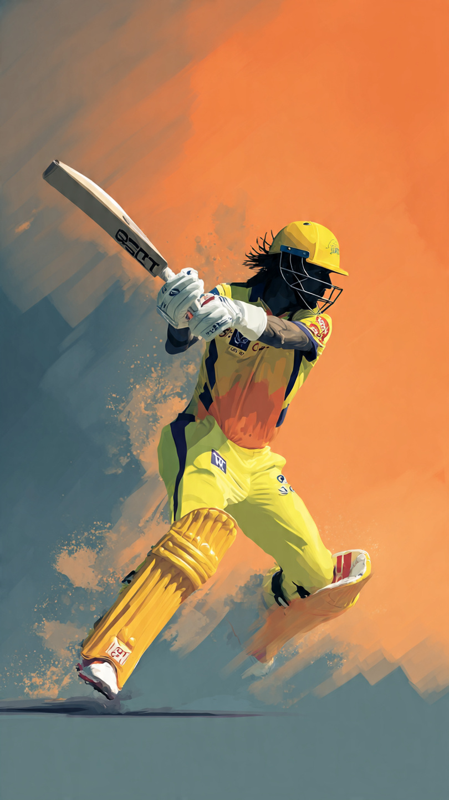

Cricket fever is at its peak as the IPL 2026 season continues to thrill fans across India and around the world. Today’s double header promises high-intensity action, with one of the most exciting clashes being between Punjab Kings (PBKS) and Sunrisers Hyderabad (SRH). With both teams aiming to strengthen their position in the points table, fans can expect a nail-biting contest filled with drama, big hits, and strategic gameplay.
The IPL double header format gives fans twice the excitement in a single day, and today is no exception. The spotlight is firmly on the PBKS vs SRH match, which is expected to draw massive viewership. Both teams have shown glimpses of brilliance this season, but consistency remains the key challenge.
Punjab Kings are known for their aggressive batting lineup, while Sunrisers Hyderabad rely heavily on disciplined bowling and tactical gameplay. This contrast in styles makes the match even more interesting for cricket lovers.
For Punjab Kings, their top-order batsmen will play a crucial role. A strong start in the powerplay can set the tone for a big total. Their middle-order hitters are also capable of accelerating the run rate in the death overs.
Sunrisers Hyderabad, on the other hand, will depend on their experienced bowlers to restrict PBKS. Their bowling attack has been effective in controlling runs and taking crucial wickets at key moments.
The pitch is expected to favor batsmen initially, offering good bounce and pace. However, as the match progresses, spinners might come into play, making it slightly challenging for batsmen.
Weather conditions are likely to remain clear, ensuring an uninterrupted match. Dew could be a factor in the second innings, influencing the captain’s decision at the toss.
Every match in IPL 2026 is crucial as teams battle for playoff spots. A win today could significantly boost the confidence and ranking of either team. With the tournament progressing rapidly, teams cannot afford to lose momentum.
Fans are especially excited about this clash because both teams have a history of close encounters. Matches between PBKS and SRH often go down to the wire, keeping viewers on the edge of their seats.
Social media platforms are buzzing with predictions, memes, and discussions about today’s match. Fans are actively supporting their favorite teams and players, making IPL not just a tournament but a festival of cricket.
Hashtags related to PBKS vs SRH are trending, and millions of fans are expected to tune in to watch the live action. The energy and enthusiasm surrounding IPL 2026 continue to grow with each passing day.
As IPL 2026 unfolds, matches like PBKS vs SRH remind us why this league is one of the most popular sporting events in the world. With top players, competitive spirit, and unpredictable outcomes, every match becomes a spectacle.
Whether you are a die-hard cricket fan or a casual viewer, today’s double header is something you should not miss. Stay tuned for live updates, scores, and post-match analysis as the action unfolds.